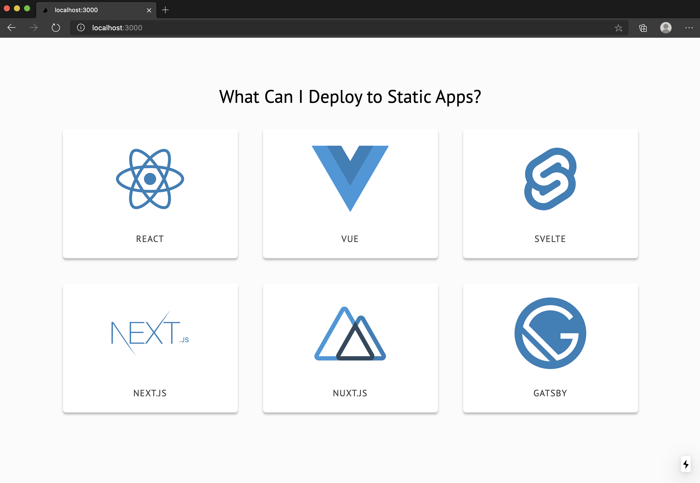

¿Qué es NextJs?
NextJs Es un framework JavaScript ligero y de código abierto creado sobre React, que permite desarrollar aplicaciones y sitios web muy rápidos y fáciles de usar. Aunque tiene una curva de aprendizaje, incluso los desarrolladores nuevos de front-end pueden aprenderlo rápidamente. Se basa en Babel y Node.js, integrándose con React para desarrollar aplicaciones.

React menciona a NextJS entre sus herramientas recomendadas, indicando que es una solución para crear sitios web renderizados por el servidor. Las aplicaciones de React solo pueden renderizar su contenido en el navegador, del lado del cliente. Además, NextJS incluye todas las funciones necesarias para convertirse en la plataforma líder para crear sitios web modernos, como exportación estática, modo de vista previa, renderizado previo, optimización automática y compilación más rápida.
¿Cómo funciona NextJS? NextJS posee varias ventajas relacionadas principalmente con la velocidad y el rendimiento.React debe combinarse con NextJS, por contener funciones como: Generación de Sitios Estáticos (SSG), Renderizado del Lado del Servidor (SSR), pre-renderizado del lado del cliente, modo de vista previa, mejores tiempos de compilación, etc.
NextJS para sitios ultra-rápidos
Con NextJS, el servidor se encarga del proceso de renderizado de cada página, en lugar del navegador del usuario. Como resultado, después de realizar una solicitud, el usuario recibe mucho más rápido una página completamente renderizada.
NextJS utiliza el Renderizado del Lado del Servidor (SSR), donde se genera el HTML en cada solicitud al servidor, o la Generación de Sitios Estáticos (SSG), donde el HTML se genera durante la compilación.
Al poder utilizar SSR y SSG indistintamente, NextJS permite renderizar páginas al momento de su solicitud o al momento de su creación. Esta flexibilidad ofrece gran rendimiento en la carga de las páginas, al igual que para la obtención de datos.
NextJS y sitios web estáticos
Estos sitios se componen de páginas web HTML guardadas en un servidor web. Son los más fáciles de diseñar, siendo ideales para sitios de pequeña escala.
La arquitectura de Redux admite el registro de errores para facilitar la depuración y tiene un método de organización de código estricto, lo que simplifica el mantenimiento. Además, cuenta con un gran número de complementos y es compatible con todas las capas de las interfaces de usuario.
Con NextJS se puede renderizar una página en el momento de la compilación, tal como aparecerá en el navegador. Esto permite ofrecer todo el contenido necesario en la carga inicial. Los clientes quedan satisfechos con el rendimiento de los sitios web de NextJS, porque al ser estáticos son más rápidos.